這可是本人第一次探隊啊，應該也是最後一次 XD。就獻給陳琳大小姐了，流水帳開始～
從新竹出發，看到氣溫 35 度真是熱死我了。上了火車廖宇凡打電話過來說他在隔壁車廂。
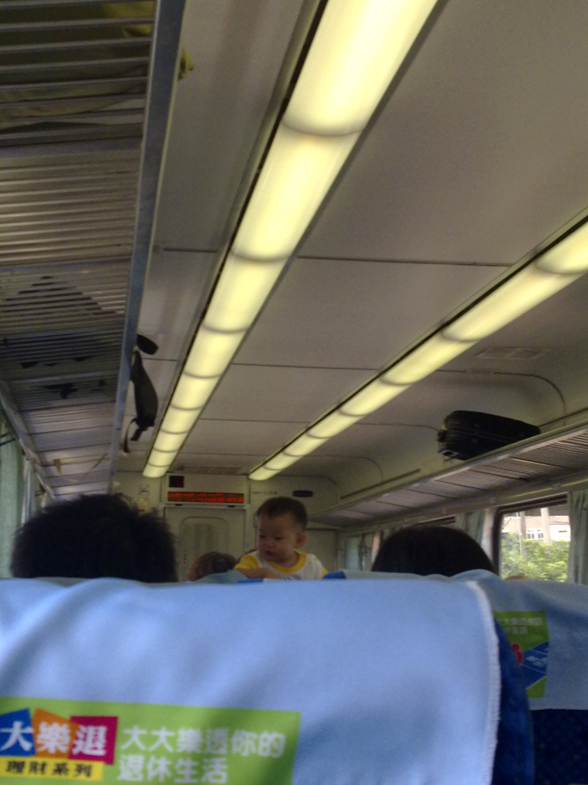
火車上有個小朋友一直探出頭來，很可愛。
坐火車過去其實蠻快的，大概一小時就到豐原了。下火車跟廖宇凡會合就去租車，租車的阿伯從我們進去到離開沒有一刻嘴巴是閒著的，一直講一直講。加完油載著廖宇凡去買菜，他好像都決定好要煮什麼了。去菜市場買了筍子跟排骨才發現排骨好像比筍子還多 XD。去廟口吃了肉圓，蠻好吃的但有點貴。廟口就是上次颱風台中遊回去在豐原等車時有去那邊買吃的，中午人好像沒有上次去那麼擠了。
吃完就往國小出發！但是一開始就迷路 XD。除了東北街超小一開始找不到之外，豐年路也是有種快騎不出去的感覺 XD。還好最後終於找到路了。騎了超久，應該有四五十分鐘吧～還看到了中橫的起點，是個很壯觀的圓環，可惜沒有拍下來。
終於到了成功國小，是個很迷你的學校。
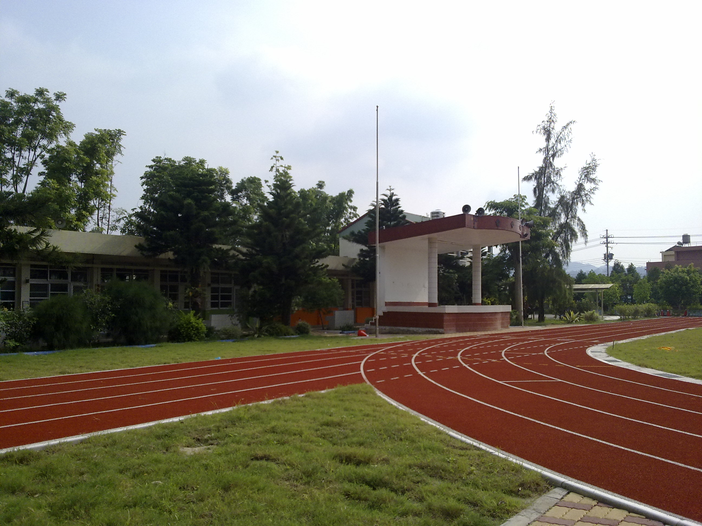
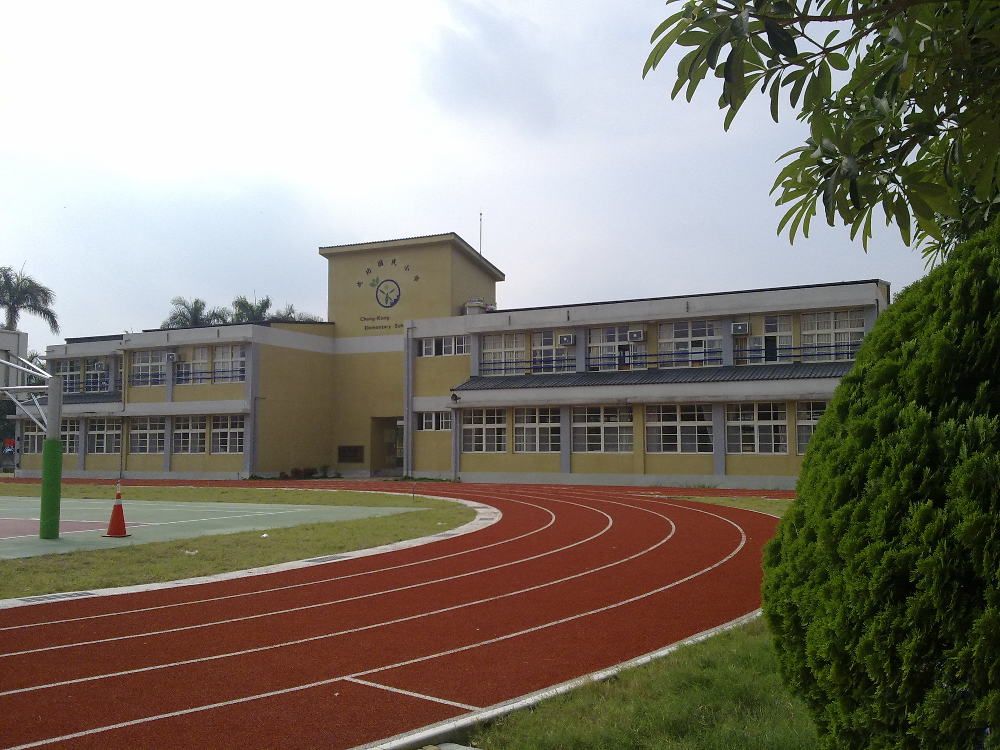
操場很新。
到的時候正在運動會，正在不知道要問誰營本部的位置時遇到了值星官 XD。值星官竟然是熊，不過她看到我們的時候還是很冷靜，一到小朋友看不到的位置馬上就變了樣 XDDD。在營本部看到胃發炎正在睡覺的陳曼寧，壓隊好大的官威啊！聽說她晚會也是沒什麼戲份。不像果凍蜂那時候老張藍志成可是愛秀的很。
很久沒有出隊，看到營本部、信袋有種懷念的感覺～後來陳曼寧帶著我們到餐廳開始一連串的抱怨 XD。副隊官官跟組頭熊也不時的插入對話加油添醋，哈哈哈哈哈。還聽到了大一大二的八卦，真是有夠誇張。
後來去幫忙晚會場佈，其實也沒有缺很多人力，我只幫忙貼個窗戶而已。
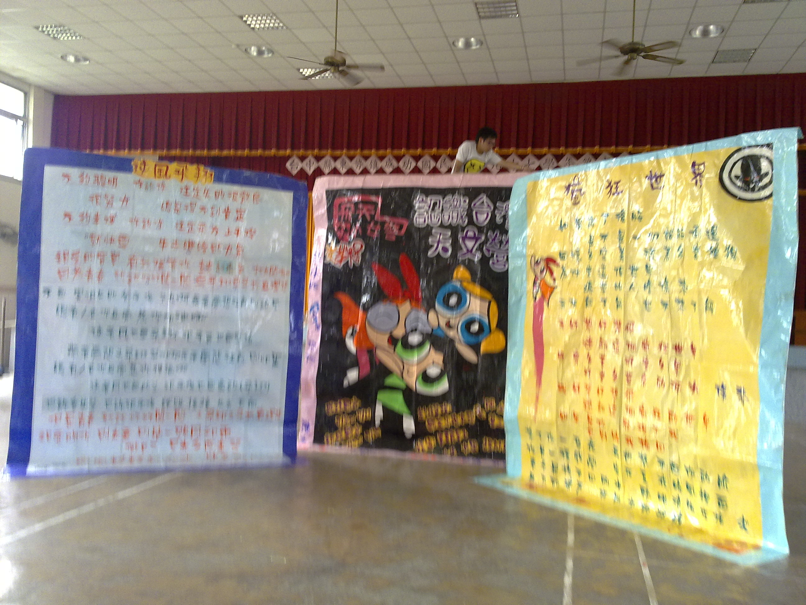
主幕跟翼幕。（不小心拍到了在主幕上的小胖，哈哈哈）
趁機把所有人的名字跟臉記了起來，不然都只知道陳曼寧 XD。隊長小胖副隊官官之前就知道了，組頭是喬治、貴妃、小儒、熊。大一只有六個，把拔雞腿小賤兔天騏國王四毛羅馬。組頭們人數比小大一多有種奇妙的感覺。
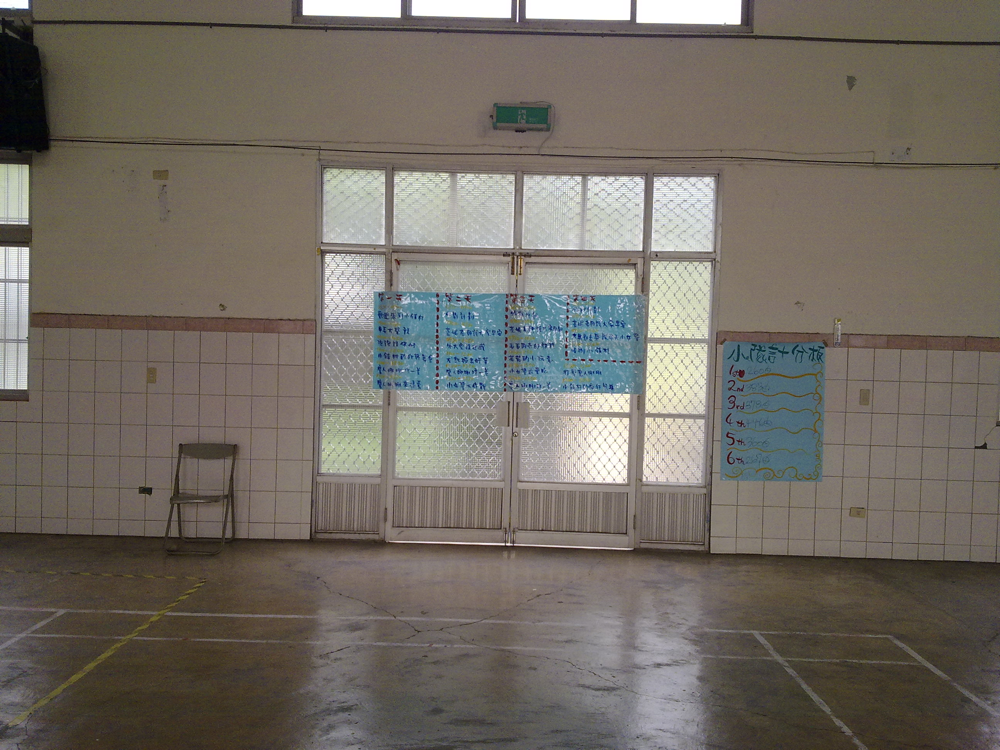
這個大小的流程海有種更奇妙的感覺。
後來大二大三的探隊組陸續到達，小居跟阿雄也來了。但他們坐車繞了一圈從台中往上又坐回豐原 XD。因為太餓了就去附近的小七吃泡麵當晚餐。回去的時候容容也來了，晚會也差不多要開始。
夏令隊好像晚會剛開始的時候天都還很亮呢。開場舞還不錯，四毛（吧）感覺是個很會跳舞的女孩。串場是大二們演的師父劇，看到的時候大家都想到了熱氣球第二梯的營晚 XD。真的是莫名其妙趕鴨子上架，可惜沒有錄到。官官跟熊演戲講話都是批哩趴拉的連珠砲～
第一齣劇是龍之家族+七張椅混合版。一開始還以為是七張椅退化成三張椅 XD。
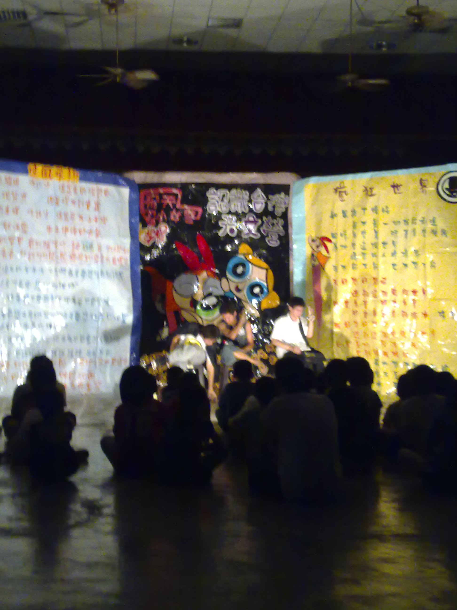
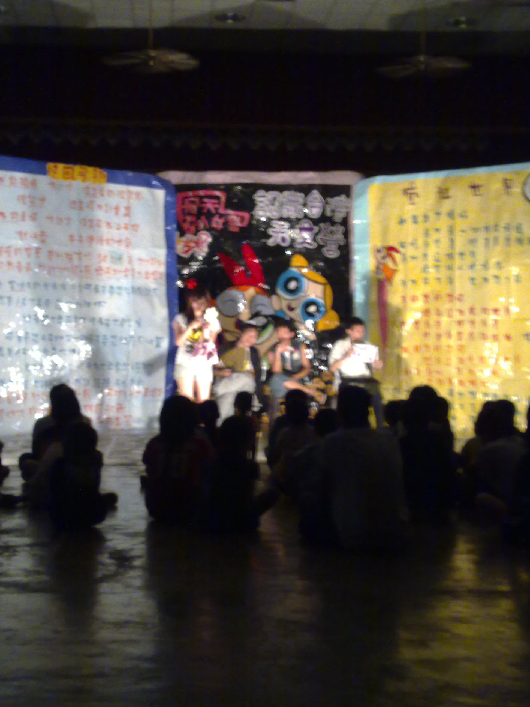
坐太遠都拍不太清楚。
創意還不錯，科科。再來沒記錯的話應該是團康 5678+當我同在一起。不知道是太久沒看晚會還是怎樣，我們都默默的覺得戲跟團康好拖台錢 XD
第二齣是喜怒哀樂。但是大一講話很小聲，坐這麼遠有點不太清楚在演什麼。尤其是那個很害羞的大一女生。
然後是中場舞還有期待已久的火球舞！但小朋友靠得太近有點危險。聽說把拔很厲害，然後隊長有莫名其妙的堅持？！動作有點難，所以一直失敗的樣子。最後結束的怪怪的，哈哈。
最後是陳美婷強力推薦的 MV 劇，但是邊演小居跟容容就開始一直碎碎念，最近的 MV 劇好像都走紙捲很多風。而且姊姊的紙捲都拉好快啊，尤其是後來跟媽媽吵架那邊，兩個人都拉的跟飛得一樣，然後馬上就往後丟，可能是想表達激動得語無倫次的感覺吧哈哈哈。還好啦，沒有到會大哭的劇情啊。老實說看到晚會就會默默想一些奇怪的點子，例如看起來是拉紙捲的 MV 劇結果其實是搞笑劇，感覺拉紙捲就有很多梗可以用。不過都這麼老了大概也沒機會啦～
不得不說小朋友真的是很皮啊！好幾個都不好好看晚會，在後面跑來跑去的。最後就是手語歌，還蠻好看的，不過陳曼寧一直躲在很不起眼的地方 XD
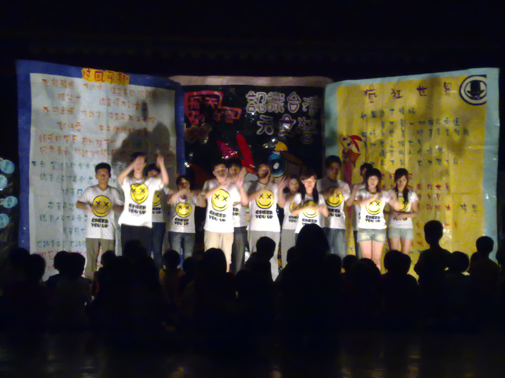
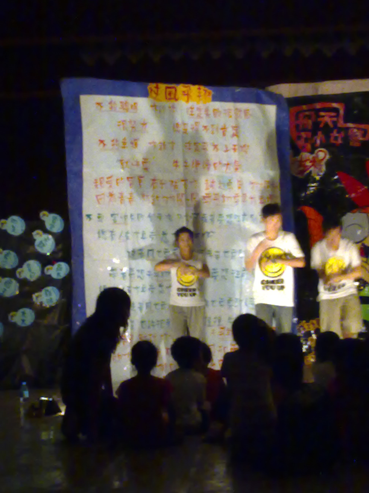
手語歌結束後就載容容去火車站。蔡容容跟黃小居約好下次再告訴他肛門期，感覺很詭異 XD
跟陳曼寧借了車因為廖宇凡去載張郁青了，一開始沒發現暗鎖一直發不動。騎去火車站的時候一直很怕騎錯路，果然最後過地下道那段真的迷路了。廖宇凡還跟我講很久要怎麼騎，結果我完全是下錯地下道了嘛 XD。後來跟阿伯問了路，他說過兩個紅綠燈後左轉直直騎就到了。蔡容容還很認真的數了一、二，就是這裡要左轉！結果轉進去越騎越怪，只好用我的手機開 GPS 定位。以為順利找到路結果地圖看錯方向越騎越遠、又用了第二次的定位才終於找到路。結果到火車站的時候已經晚了十幾分鐘了，囧。還好陳美婷沒被外勞抓走。
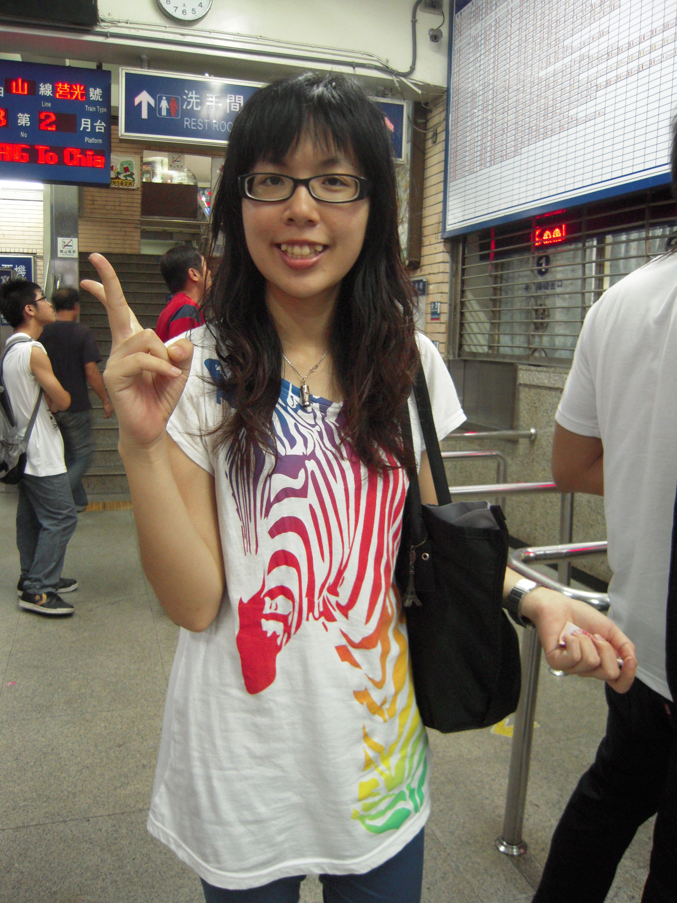
陳美婷順利的跟蔡容容見了一面，哈哈哈。
然後就載陳美婷去成功國小，連續騎車快兩個小時真的是很累。途中去了小七買信袋糖，陳美婷買了很多張君雅 XD。一次灌整條張君雅應該很爽～
回程一直在講有的沒的，不倒翁的組頭全部一起離開國小真是太酷了 XD。熱氣球都只有叫大一去尋寶，組頭全體都在偷休息哈哈哈。一到國小發現右前方有人群吵雜的聲音，後來才知道是大二的男生集體回憶出隊用水管在洗澡 XDDD。黃小居訂了清心給全部的人（幾乎啦），我的差點就被喝掉了。但真的是很不甜的驚人啊。張郁青也來了但她根本就是一直在放閃光！！！
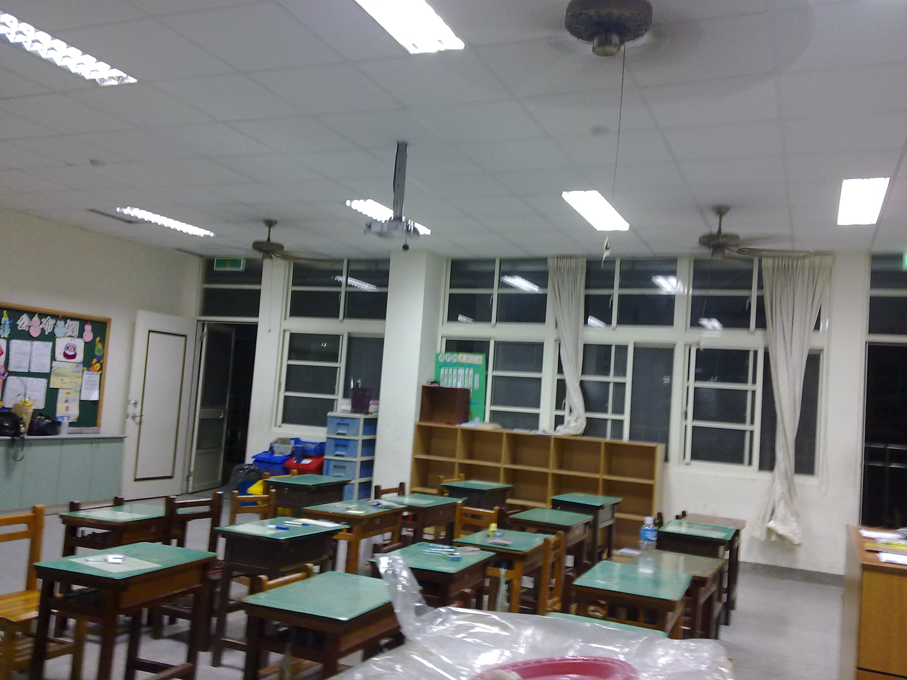
後來熱氣球就去了另一間的探隊組教室，寫信袋還有洗澡。突然發現老師的電腦沒關而且還可以上網～而且喇叭還是接教室的音響，於是就拿來放起了音樂 XD。
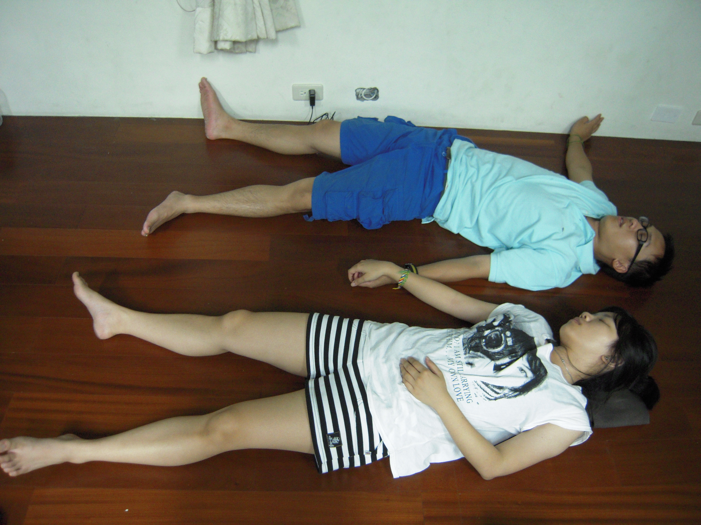
這兩個人真是太閃了連睡覺都要牽手！
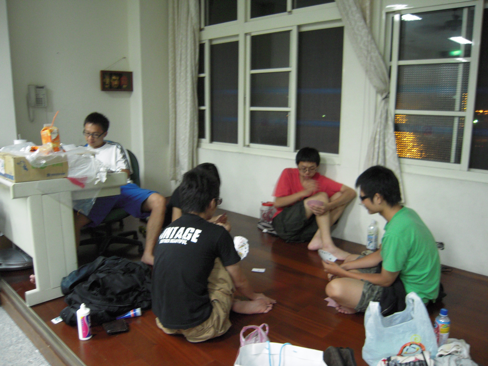
後來就打起橋牌來了 XD
一打就打到隔天早上五點！！！真是太驚人了好久沒有熬夜。連初心者黃小居還有不會玩的陳美婷都變厲害了！
印象最深的一場是我跟黃小居對家，我們兩個都只有四點，而且一隻 A 都沒有！更慘的是剛開始不久就被阿雄用王牌切走五點了！兩個人只剩下三點，而且一墩都還沒吃到。最後竟然贏了！！！！！！！整個超爽的，而且笑得肚子好痛 XD。因為實在是太驚人了！！！！我跟黃小居真的是合作無間啊！
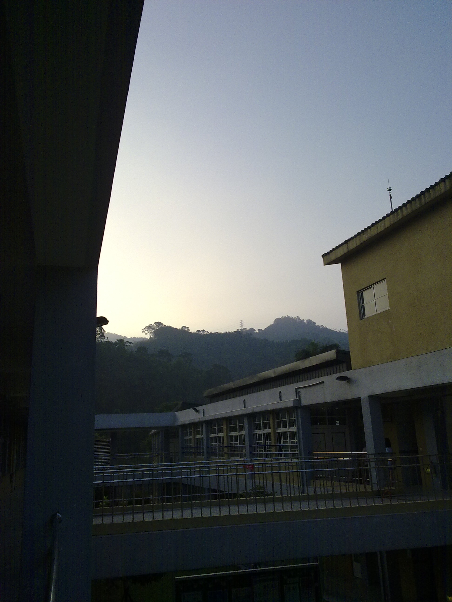
打到天都亮了，大家腦袋也越來越不能思考。不知道是誰要講迴光返照結果講成反璞歸真 XDDDDDD。大家都反璞歸真了～
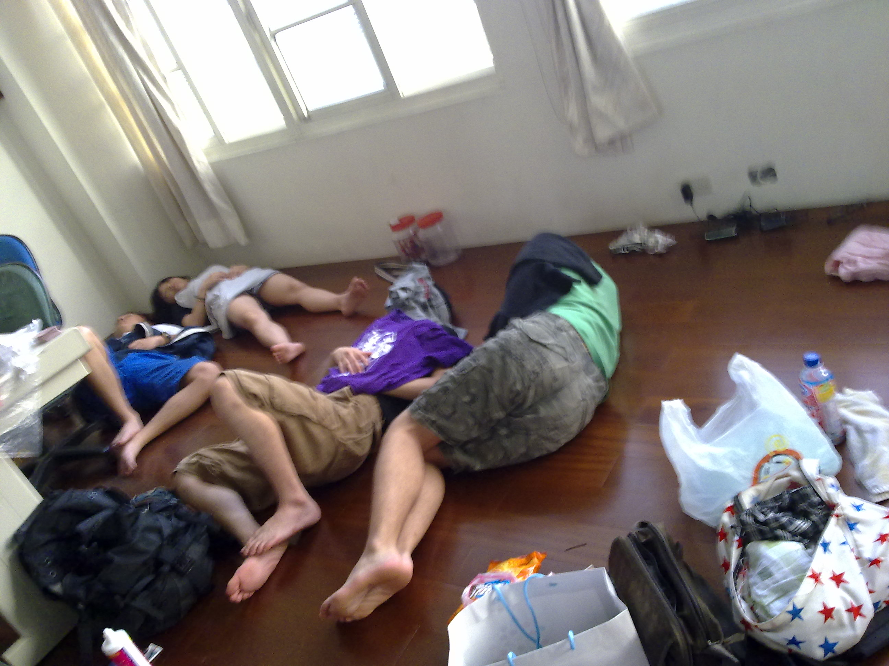
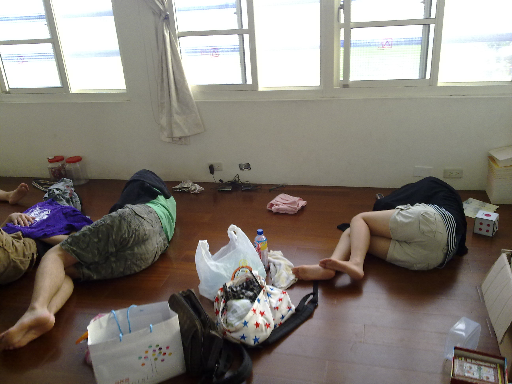
於是五點多牛盃都起床了我們才去睡覺。第一天完。
好流水的一篇文啊！第一次打網誌的遊記就打了這麼多～還有第二天呢累死我了，還好在新竹蠻閒的 XD